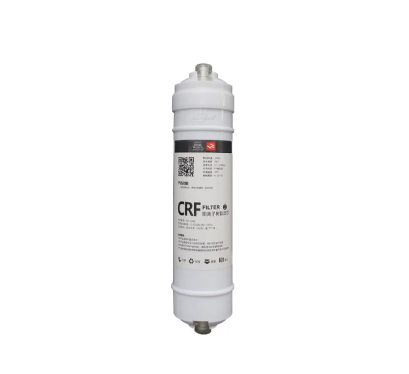

Bộ lọc nhựa trao đổi ion
Lõi lọcLõi lọc nhựa trao đổi ion là lõi lọc nước lắp trực tiếp trên đường ống dành cho các hệ thống nước uống cần chức năng cụ thể của vật liệu lọc và vị trí lắp đặt gọn. Xác nhận kích thước đầu nối, mục đích sử dụng vật liệu lọc, ống dẫn tương thích, tuổi thọ sử dụng dự kiến, thiết kế nhãn và phương án đóng gói. Thông số chính bao gồm Chức năng: Làm mềm nước.
Lưu ý lựa chọn dành cho người mua
Lõi lọc nhựa trao đổi ion cần được lựa chọn theo chức năng của vật liệu lọc, kích thước đầu nối, độ tương thích với ống dẫn, vị trí lắp đặt và tuổi thọ sử dụng dự kiến. Người mua lõi lọc thay thế lắp trực tiếp trên đường ống thường cần nhãn rõ ràng, các tùy chọn hộp bán lẻ và ghi chú về độ tương thích cho các chương trình máy lọc nước hoặc máy cấp nước.
Các chi tiết cần xác nhận trước khi báo giá
- Chức năng của vật liệu lọc, vị trí lắp đặt và kích thước đầu nối
- Ống tương thích, mẫu máy lọc nước và tuổi thọ sử dụng dự kiến
- Yêu cầu về lõi lọc cải thiện vị, bổ sung khoáng, sử dụng nhựa trao đổi ion, UF hoặc lõi lọc chuyên dụng
- Thiết kế nhãn, hộp bán lẻ và kế hoạch cho bộ lõi thay thế
Lưu ý cho người mua lõi lọc nhựa trao đổi ion
Đối với lõi lọc nhựa trao đổi ion, các trang sản phẩm lõi lọc chuyên dụng cần nêu rõ giới hạn chức năng. Mô tả vị trí lắp đặt lõi lọc, vật liệu lọc được sử dụng, cách lõi hỗ trợ về vị của nước hoặc bảo vệ hệ thống và những điều người mua phải xác nhận về độ tương thích.
Thông tin cần xác nhận
- Chức năng của vật liệu lọc và vị trí lắp đặt
- Kích thước đầu nối và ống tương thích
- Tuổi thọ sử dụng dự kiến và kế hoạch cho bộ lõi thay thế
- Nhu cầu về nhãn, bao bì và tài liệu cho thị trường
Thông số kỹ thuật
| Chức năng | Làm mềm nước |
|---|---|
| Loại bỏ | Ca/Mg/Kim loại nặng |
Tính năng chính
- Được cấu hình dựa trên lõi lọc nhựa trao đổi ion, kèm thông tin ứng dụng cụ thể cho mẫu sản phẩm.
- Việc đánh giá lõi lọc bao gồm vật liệu lọc, chiều dài, đường kính, nắp đầu, bộ phận làm kín và các vỏ lọc tương thích.
- Có thể chuẩn bị nhãn mang thương hiệu riêng, tài liệu hướng dẫn và thùng carton sau khi xác nhận mẫu.
- Nên xác nhận thị trường mục tiêu và điều kiện lắp đặt khi đặt hàng mẫu và đặt hàng số lượng lớn.
- Có thể điều chỉnh cách đóng gói chung nhiều sản phẩm, bọc màng co, nhãn và cách đóng gói bộ lõi thay thế theo nhu cầu của nhà phân phối.
Sản phẩm liên quan
Sản phẩm liên quan

Bộ lõi lọc kết hợp nhiều cấp
Bộ lõi lọc kết hợp nhiều cấp — Cấu hình kết hợp: Theo yêu cầu.
Gửi yêu cầu
Bộ lọc nước cỡ trung có đầu nối bằng đồng
Bộ lọc nước cỡ trung có đầu nối bằng đồng — Đầu nối: Đồng.
Gửi yêu cầu
Lõi lọc PP thổi nóng chảy
Lõi lọc PP thổi nóng chảy — Vật liệu: Sợi PP; Chức năng: Lọc cặn.
Gửi yêu cầuYêu cầu báo giá lõi lọc nhựa trao đổi ion
Gửi số lượng, thị trường mục tiêu, ghi chú về cấu hình và yêu cầu đóng gói cho lõi lọc nhựa trao đổi ion. Yuchen Water sẽ xác nhận các tùy chọn phù hợp, phụ kiện và chi tiết xuất khẩu trước khi báo giá.